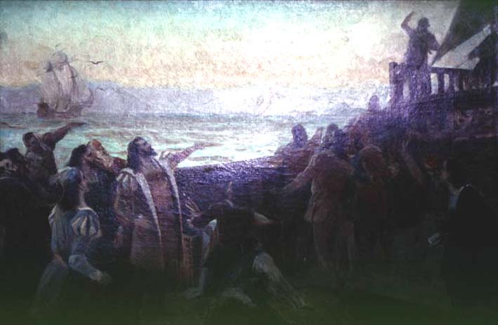

|
|  |
|
Aurélio de Figueiredo e Melo, O Descobrimento do Brasil (estudo)
|
Scenes of 'discovery' such as Aurélio de Figueiredo´s study from the 1870s highlighted the Portuguese ancestry of the Brazilian nation: the beginning of national history is the first sighting of the Brazilian coast by Cabral and his crew in 1500. The land is already there, but it is still purely place: self-identical, unchanging, 'prehistorical', in a perennial state of 'awaitening' its conquerors´ arrival. The subject of history is not only the subject of conquest but also the one of representation – the historian, the artist– whereas the land is its object: a page or a canvas, raw material yet to be released from its primordial inertia through the transformative action of its (male) beholder.
|